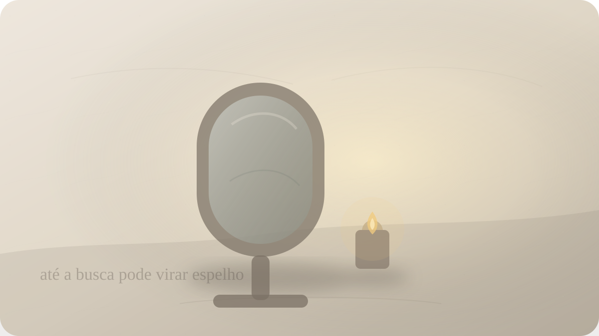

Ego
Quando até a espiritualidade alimenta o ego
Chögyam Trungpa e a armadilha de transformar despertar, cura e sabedoria em mais uma forma de autoimagem.

O ego não se veste sempre de arrogância óbvia. Às vezes ele chega com voz mansa, vocabulário elevado, postura serena, livros sublinhados, práticas diárias, frases sobre desapego e uma identidade cuidadosamente construída em torno da própria profundidade. A pessoa não diz “sou superior”. Diz apenas, com delicadeza, que está em outro nível de consciência.
Essa é uma das armadilhas mais sutis da vida interior: transformar o caminho de libertação em material para uma nova prisão. A pessoa abandona certas vaidades grosseiras, mas adquire vaidades refinadas. Troca o desejo de parecer rica pelo desejo de parecer desperta. Troca a competição social pela competição de lucidez. Troca a agressividade direta por superioridade compassiva. O ego perdeu uma roupa e encontrou outra melhor cortada.
Chögyam Trungpa chamou esse fenômeno de materialismo espiritual. Em Cutting Through Spiritual Materialism, livro organizado a partir de palestras dadas no início dos anos 1970, ele descreve a tendência de usar práticas, mestres, ideias e experiências espirituais para fortalecer exatamente aquilo que o caminho deveria expor: a fixação no eu.
O conceito é poderoso porque não atinge apenas pessoas religiosas. Ele vale para meditação, terapia, filosofia, autoconhecimento, produtividade consciente, psicologia, arte, ativismo, vida minimalista, cura emocional. Qualquer linguagem de transformação pode ser convertida em decoração do ego.
A pergunta deste ensaio é incômoda: quando aquilo que você chama de evolução está apenas tornando sua autoimagem mais sofisticada?
Trungpa percebe que o ego é extremamente adaptável. Ele não se opõe necessariamente à espiritualidade. Ao contrário, pode apropriar-se dela com entusiasmo. O ego aprende os termos corretos, frequenta os ambientes certos, adota hábitos, cita mestres, coleciona experiências, identifica-se como buscador, praticante, curado, consciente, intuitivo, desperto, sensível demais para o mundo comum.
O problema não está em estudar, meditar, buscar terapia, desejar amadurecer ou usar linguagem espiritual. Tudo isso pode ser legítimo. O problema começa quando esses instrumentos deixam de abrir a pessoa para a realidade e passam a protegê-la contra a realidade. A prática vira identidade. A identidade vira defesa. A defesa vira prisão elegante.
A pessoa medita para se tornar alguém que medita. Lê para se tornar alguém que sabe. Fala de desapego para não encarar sua incapacidade de amar sem controlar. Fala de energia negativa para evitar críticas. Fala de limites para não reconhecer egoísmo. Fala de intuição para não prestar contas. Fala de paz para não entrar em conflito justo.
Essa é a genialidade desagradável do materialismo espiritual: ele usa o vocabulário da liberdade para preservar padrões antigos.
Por isso o tema exige honestidade. É fácil identificar materialismo espiritual nos outros. O guru teatral, o influenciador de cura, a pessoa que transforma todo sofrimento alheio em lição vibracional, o amigo que responde à dor com frases prontas sobre frequência. Mas o diagnóstico só importa quando volta para nós. Onde estou usando sabedoria para não ser atravessado por verdade?
Trungpa não escreve como alguém interessado em consolar a vaidade espiritual. Seu estilo é cortante. Ele alerta que a espiritualidade pode virar aquisição: colecionamos técnicas, estados, símbolos, linhagens, certificações, experiências intensas. Como quem acumula objetos, acumulamos sinais de profundidade.
Há um prazer secreto nisso. Ser alguém em caminho pode ser mais sedutor do que simplesmente caminhar. A identidade de buscador oferece distinção. A pessoa comum apenas sofre; eu estou transmutando. A pessoa comum apenas se irrita; eu estou observando padrões. A pessoa comum apenas erra; eu estou em processo. Tudo vira linguagem para proteger uma imagem mais nobre de si.
Essa crítica também alcança o autoconhecimento psicológico. Hoje é possível transformar a própria ferida em marca identitária altamente elaborada. A pessoa nomeia traumas, padrões, arquétipos, mecanismos de defesa, estilo de apego, sombra, gatilhos. Esse vocabulário pode libertar. Mas também pode virar museu do eu. Em vez de diminuir a fixação, aumenta a sofisticação da narrativa pessoal.
A pergunta então não é se uma prática é espiritual ou não. A pergunta é: ela torna você mais disponível à realidade, ou apenas mais especializado em justificar-se?
Uma prática viva tende a nos tornar mais simples, mais responsáveis, mais permeáveis, menos apressados em defender nossa imagem. Uma prática capturada pelo ego tende a nos tornar mais especiais, mais imunes à crítica, mais dependentes de reconhecimento, mais hábeis em transformar qualquer desconforto em prova de superioridade.
O ego espiritual também adora experiências extraordinárias. Sensações durante meditação, sonhos, sincronicidades, intuições, estados de expansão, encontros intensos, sinais. Nada disso precisa ser falso. O problema é a apropriação. A experiência acontece; logo a mente constrói um personagem ao redor dela. Eu tive uma experiência. Eu vi. Eu entendi. Eu fui escolhido. Eu sou diferente.
Trungpa não nega que experiências possam ocorrer. Ele questiona o apego a elas. O caminho não é parque de diversões da consciência. Estados vêm e vão. A pergunta é o que acontece quando a experiência passa e sobra a vida comum: lavar louça, pedir desculpas, não manipular, escutar, trabalhar, reconhecer inveja, não usar espiritualidade para fugir de responsabilidade.
A vida cotidiana é um antídoto cruel contra o ego espiritual. É fácil parecer desperto diante de uma frase bonita. Difícil é não humilhar alguém quando se está ferido. Fácil é falar de compaixão. Difícil é não usar compaixão como máscara de controle. Fácil é dizer que tudo é impermanente. Difícil é não punir o outro quando ele muda.
Nesse ponto, o materialismo espiritual encontra uma forma especialmente perigosa: a superioridade moral. A pessoa acredita estar acima das emoções comuns. Raiva é coisa de gente inconsciente. Ciúme é coisa de ego. Tristeza é baixa vibração. Dúvida é falta de fé. Assim, emoções humanas deixam de ser investigadas e passam a ser reprimidas em nome de uma imagem limpa.
Mas aquilo que é rejeitado não desaparece. A raiva pode voltar como ironia espiritual. O ciúme pode voltar como crítica ao apego alheio. A carência pode voltar como vocação de curar todos. A inveja pode voltar como desprezo por quem aparece mais. O ego não precisa vencer pela força; basta que consiga permanecer invisível.
Por isso a crítica de Trungpa é útil também contra os próprios mestres, inclusive ele. Sua figura histórica é influente e controversa, e não deve ser transformada em ídolo intocável. Talvez a maneira mais honesta de usar seu ensinamento seja justamente não canonizá-lo. O conceito de materialismo espiritual perderia força se servisse para proteger qualquer autoridade de exame crítico.
Essa observação é importante. A espiritualidade que exige suspensão da lucidez virou poder. A prática que proíbe perguntas virou submissão. O mestre que não pode ser questionado tornou-se objeto de apego. O grupo que chama crítica de ego talvez esteja usando linguagem espiritual para defender hierarquia.
Cortar o materialismo espiritual não é abandonar toda busca. É abandonar a tentativa de usar a busca como maquiagem. É perceber quando uma técnica, um livro, uma linhagem, um retiro, uma terapia, uma frase ou uma identidade de pessoa consciente está sendo usada para evitar a nudez simples de estar confuso, ferido, vaidoso, com medo.
Essa nudez é o ponto. Talvez o caminho real comece quando a pessoa para de performar caminho. Quando admite: não sei. Estou com raiva. Quero ser admirado. Tenho medo de ser comum. Uso palavras bonitas para me proteger. Quero parecer livre, mas ainda quero controlar. Quero ser visto como profundo, mas fujo da simplicidade de pedir perdão.
Esse tipo de honestidade não é agradável. Também não produz necessariamente uma imagem espiritual bonita. Pode parecer fracasso. Mas talvez seja mais verdadeiro do que uma serenidade encenada. A prática começa a ter algum valor quando atravessa a autoimagem, não quando a melhora para consumo interno e externo.
Em termos simples, observe o que sua busca produz. Ela o torna mais humano ou mais performático? Mais responsável ou mais intocável? Mais capaz de ouvir ou mais armado de conceitos? Mais livre para não saber ou mais dependente de parecer alguém que sabe?
O ego se alimenta de resistência, mas também se alimenta de ideal. Pode dizer “sou melhor” ou “sou muito humilde”. Pode dizer “sou desperto” ou “sou profundamente quebrado”. Pode até fazer identidade de não ter identidade. A criatividade dele é quase cômica, se não fosse tão custosa.
Talvez o antídoto não seja uma grande revelação, mas uma simplicidade desconfortável: voltar à experiência sem decorá-la. Sentir sem transformar em personagem. Praticar sem transformar em medalha. Estudar sem transformar em arma. Ajudar sem transformar em palco. Errar sem transformar em drama narcísico. Crescer sem anunciar crescimento como marca pessoal.
Trungpa nos deixa com uma suspeita saudável: aquilo que parece espiritual pode estar servindo ao velho desejo de ser alguém especial. E talvez a maturidade comece quando não usamos essa suspeita para odiar a nós mesmos, mas para sorrir diante da própria maquinaria interna e parar de obedecê-la automaticamente.
A pergunta final é uma pequena lâmina: se ninguém pudesse ver sua evolução, sua pureza, sua profundidade ou sua consciência, ainda assim você escolheria praticar a verdade?
Pergunta final
Se ninguém pudesse ver sua evolução, sua pureza, sua profundidade ou sua consciência, ainda assim você escolheria praticar a verdade?
Fontes e leituras
- TRUNGPA, Chögyam. Cutting Through Spiritual Materialism. Shambhala Publications, 1973.
- TRUNGPA, Chögyam. The Myth of Freedom and the Way of Meditation. Shambhala Publications, 1976.
- TRUNGPA, Chögyam. Meditation in Action. Shambhala Publications.
- Shambhala Publications. Cutting Through Spiritual Materialism — descrição editorial.
- Mindworks. Spiritual Materialism and How to Avoid It.
- Naropa University. Chögyam Trungpa: histórico institucional.
Leituras relacionadas
E você, o que está sentindo agora?
Escolha seu momento e encontre uma reflexão filosófica para atravessá-lo com mais clareza.
Encontrar uma reflexão